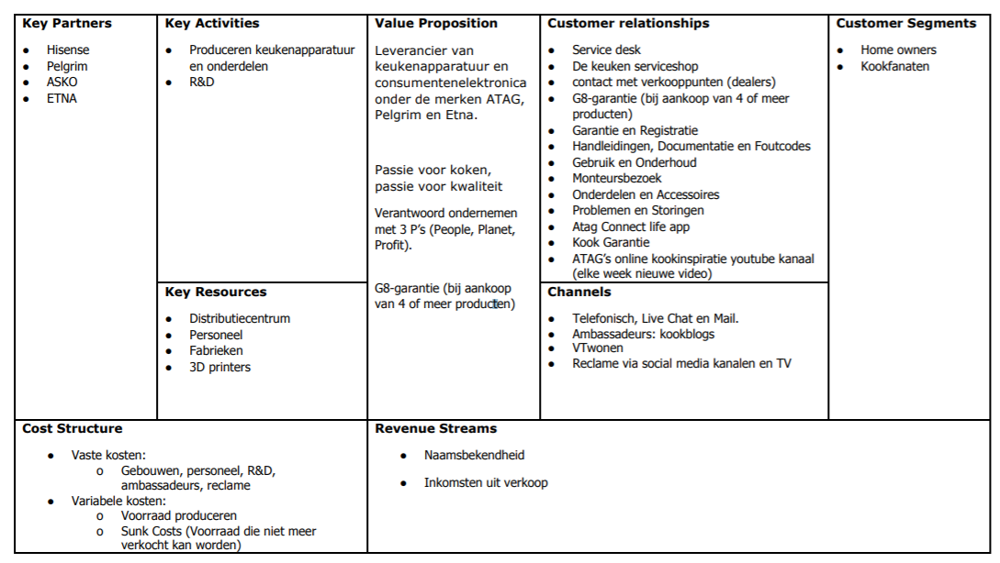
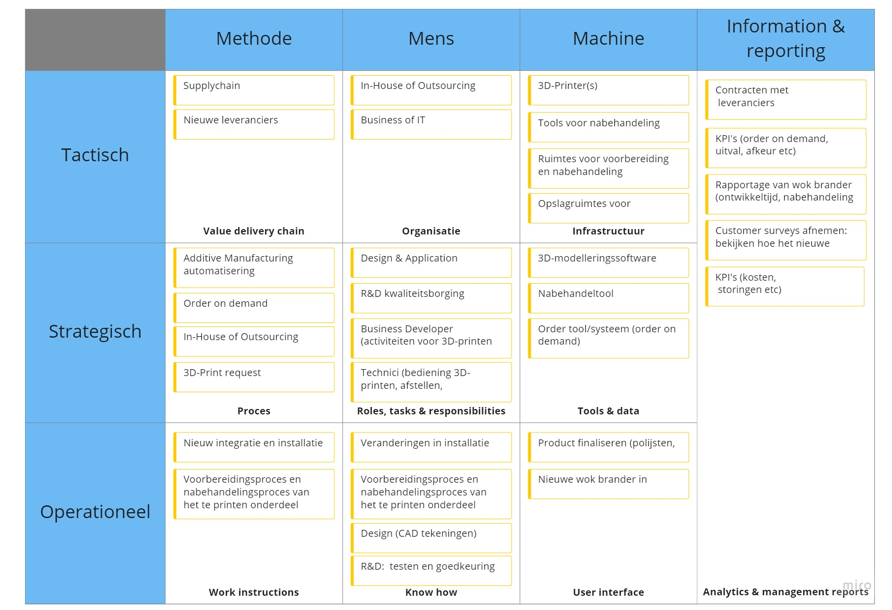

Week 4: BMC & TOM 3 ATAG
Geschreven door Mirja Vink
Tijdens ons project hebben wij voor het Plan van Aanpak gebruik gemaakt van het BMC. Dit hebben wij in week 4 gemaakt tijdens de les Smart Business.
Na een aantal gesprekken met ATAG hebben wij de impact die 3D-printen op de organisatie zou hebben ook in een nieuwe BMC gezet.
.jpg) Daarnaast hebben wij een TOM3 model ingevuld over de impact van de veranderingen die 3D-printen op de organisatie zou hebben.
Daarnaast hebben wij een TOM3 model ingevuld over de impact van de veranderingen die 3D-printen op de organisatie zou hebben.
